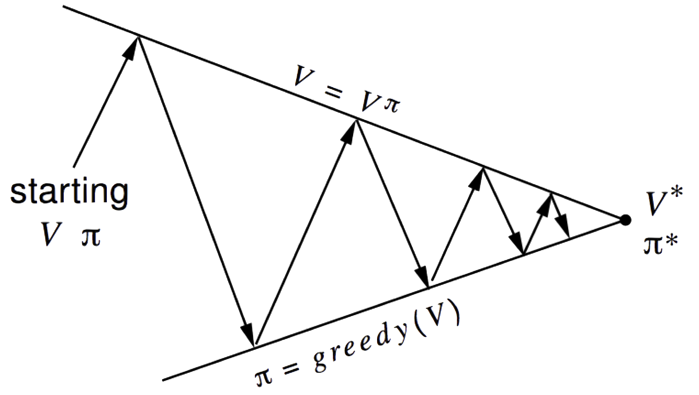
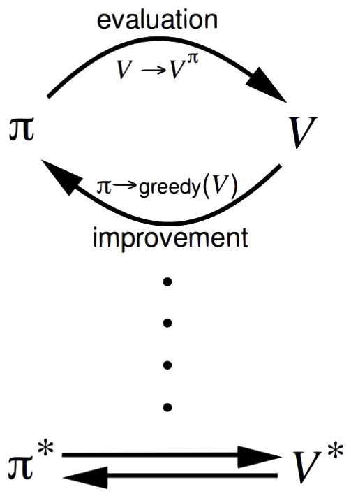
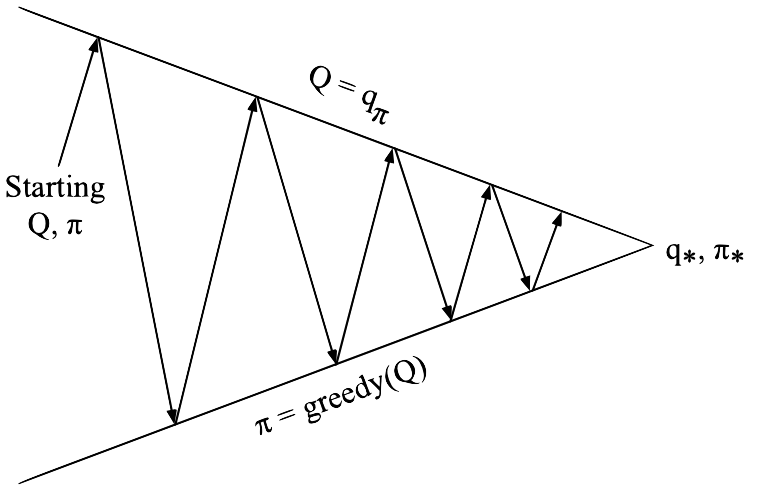
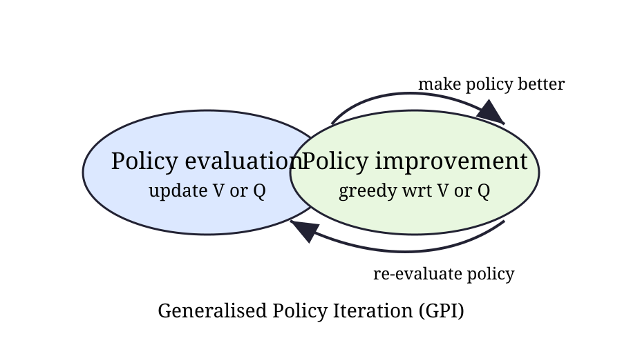
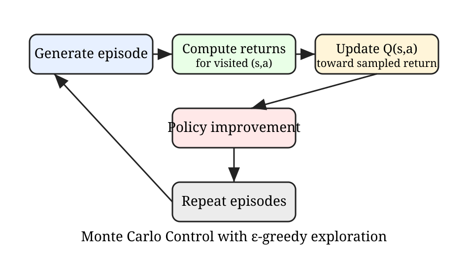
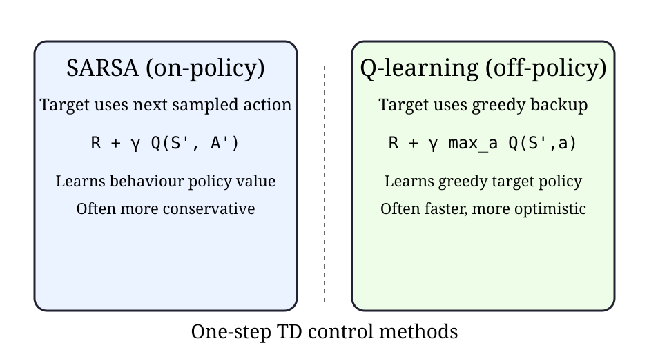

Model-Free Control
James Brusey
Overview
Lecture outline
- Introduction to model-free control
- Generalised policy iteration (GPI)
- Monte Carlo control
- Temporal-difference control
- On-policy vs off-policy learning
Introduction
Model-Free Reinforcement Learning
- Last lecture:
- Model-free prediction
- Estimate the value function of an unknown MDP
- This lecture:
- Model-free control
- Optimise the value function of an unknown MDP
Uses of Model-Free Control
Some example problems that can be modelled as MDPs:
- Elevator
- Parallel Parking
- Ship Steering
- Bioreactor
- Helicopter
- Aeroplane Logistics
- Robocup Soccer
- Quake
- Portfolio management
- Protein Folding
- Robot walking
- Game of Go
For most of these problems, either:
- The MDP model is unknown, but experience can be sampled
- The MDP model is known, but is too big to use, except by samples
Model-free control can solve these problems.
On and Off-Policy Learning
- On-policy learning
- "learn on the job"
- learn about policy \(\pi\) from experience sampled from \(\pi\)
- Off-policy learning
- "Look over someone's shoulder"
- Learn about policy \(\pi\) from experience sampled from \(\mu\)
Generalised Policy Iteration (Refresher)

- Policy evaluation
- Estimate \(v_\pi\) e.g., Iterative policy evaluation
- Policy improvement
- Generate \(\pi' > \pi\) e.g., Greedy policy improvement

Generalised Policy Iteration With Monte-Carlo Evaluation
- Policy evaluation
- Monte-Carlo policy evaluation, \(V=v_\pi\)?
- Policy improvement
- Greedy policy improvement?
Model-Free Policy Iteration Using Action-Value Function
Greedy policy improvement over \( V(s) \) requires a model of the MDP:
\[ \pi'(s) = \arg\max_{a \in \mathcal{A}} \left( \mathcal{R}_s^a + \sum_{s'} \mathcal{P}_{ss'}^a V(s') \right) \]
Greedy policy improvement over \( Q(s,a) \) is model-free:
\[ \pi'(s) = \arg\max_{a \in \mathcal{A}} Q(s,a) \]
Generalised Policy Iteration with Action-Value Function

- Policy evaluation
- Monte-Carlo policy evaluation, \( Q = q_{\pi} \)
- Policy improvement
- Greedy policy improvement?
Example of Greedy Action Selection

There are two doors in front of you.
- You open the left door and get reward \(0\) \(V(\text{left}) = 0\)
- You open the right door and get reward \(+1\) \(V(\text{right}) = +1\)
- You open the right door and get reward \(+3\) \(V(\text{right}) = +2\)
- You open the right door and get reward \(+2\) \(V(\text{right}) = +2\) \[\vdots\]
- Are you sure you’ve chosen the best door?
\( \varepsilon \)-Greedy Exploration
- Simplest idea for ensuring continual exploration.
- All \( m \) actions are tried with non-zero probability.
- With probability \( 1 - \varepsilon \), choose the greedy action.
- With probability \( \varepsilon \), choose an action at random. \[ \pi(a \mid s) = \begin{cases} \frac{\varepsilon}{m} + 1 - \varepsilon & \text{if } a = \arg\max_{a \in \mathcal{A}} Q(s,a) \\ \\ \frac{\varepsilon}{m} & \text{otherwise} \end{cases} \]
\( \varepsilon \)-Greedy Policy Improvement
For any \( \varepsilon \)-greedy policy \( \pi \), the \( \varepsilon \)-greedy policy \( \pi' \) with respect to \( q^{\pi} \) is an improvement: \[ v^{\pi'}(s) \ge v^{\pi}(s) \]
Therefore, by the policy improvement theorem, \(v^{\pi'}(s) \ge v^{\pi}(s)\).
Control in reinforcement learning
- Prediction estimates the value of a fixed policy.
- Control improves behaviour to find an optimal policy.
- In an MDP, the goal is to compute \[ \pi_* = \arg\max_\pi v_\pi(s),\;\forall s\in\mathcal{S}. \]
- For action values, we seek \[ q_*(s,a)=\max_\pi q_\pi(s,a). \]
Why model-free control?
- Dynamic programming requires known transition and reward models.
- Many practical RL problems only provide sampled experience.
- Model-free control learns directly from episodes or transitions.
- Typical strategy:
- estimate action values,
- improve the policy greedily (or nearly greedily),
- repeat.
On-Policy Monte-Carlo Control
GPI intuition
- GPI alternates between:
- policy evaluation (make values consistent with policy), and
- policy improvement (make policy greedy wrt values).
- These two processes can be partial and interleaved.
- Control algorithms differ mainly in how each process is approximated.
GPI loop diagram

Greedy policy improvement
Given action-value estimates \(Q(s,a)\), an improved policy is \[ \pi'(s)=\arg\max_a Q(s,a). \] For stochastic exploration, use $ε$-greedy: $$ π(a\mid s)=
$$
Monte Carlo Control
Monte Carlo control setup
- Works with complete episodes.
- Uses returns \(G_t\) as unbiased sample targets.
- First-visit MC action-value estimate: \[ Q(s,a) \leftarrow Q(s,a) + \alpha\left(G_t - Q(s,a)\right) \]
- Policy is improved between episodes.
Exploring starts and practical alternatives
- Exploring starts guarantees all state-action pairs are visited, but is unrealistic in many tasks.
- In practice, use soft policies (e.g., $ε$-greedy) so every action retains non-zero probability.
- This ensures continual exploration during learning.
Monte Carlo control flow

GLIE idea
- GLIE: Greedy in the Limit with Infinite Exploration.
- Requirements:
- every \((s,a)\) visited infinitely often,
- policy converges to greedy as training proceeds.
- Common schedule: decrease \(\epsilon_t \to 0\) slowly over time.
Temporal-Difference Control
SARSA (on-policy TD control)
Update using experienced transition \((S_t,A_t,R_{t+1},S_{t+1},A_{t+1})\): \[ Q(S_t,A_t) \leftarrow Q(S_t,A_t) + \alpha\left[R_{t+1}+\gamma Q(S_{t+1},A_{t+1})-Q(S_t,A_t)\right]. \]
- Learns value of the behaviour policy itself.
- Typically paired with $ε$-greedy exploration.
Q-learning (off-policy TD control)
Update using greedy bootstrap target: \[ Q(S_t,A_t) \leftarrow Q(S_t,A_t) + \alpha\left[R_{t+1}+\gamma\max_a Q(S_{t+1},a)-Q(S_t,A_t)\right]. \]
- Behaviour policy can remain exploratory.
- Target policy is greedy wrt current \(Q\) estimates.
SARSA vs Q-learning

Expected SARSA
Expected SARSA replaces sampled \(Q(S_{t+1},A_{t+1})\) with expectation under policy: \[ Q(S_t,A_t) \leftarrow Q(S_t,A_t)+\alpha\left[R_{t+1}+\gamma\sum_a\pi(a\mid S_{t+1})Q(S_{t+1},a)-Q(S_t,A_t)\right]. \]
- Lower variance than SARSA.
- Can be more stable with stochastic policies.
On-Policy and Off-Policy Learning
Conceptual distinction
- On-policy: learn about the policy used to generate data.
- Example: SARSA.
- Off-policy: learn about a target policy different from behaviour policy.
- Example: Q-learning.
- Off-policy methods are often more data-reuse friendly.
Behaviour and target policies
- Behaviour policy \(b\): generates actions and trajectories.
- Target policy \(\pi\): policy we evaluate/improve.
- In value-based control, off-policy methods often keep:
- exploratory \(b\) for coverage,
- greedy \(\pi\) for optimisation.
Practical Guidance
Key implementation details
- Initialise \(Q(s,a)\) carefully (optimistic initialisation can encourage exploration).
- Tune learning rate \(\alpha\) and exploration \(\epsilon\) schedules.
- Use episode returns for MC; one-step bootstrapping for TD.
- Track both training reward and policy evaluation performance.
Summary
- Model-free control solves MDP control from sampled interaction.
- GPI unifies MC and TD control methods.
- MC: episodic, unbiased but higher variance.
- TD: bootstrapped, usually faster and more incremental.
- SARSA is on-policy; Q-learning is off-policy.